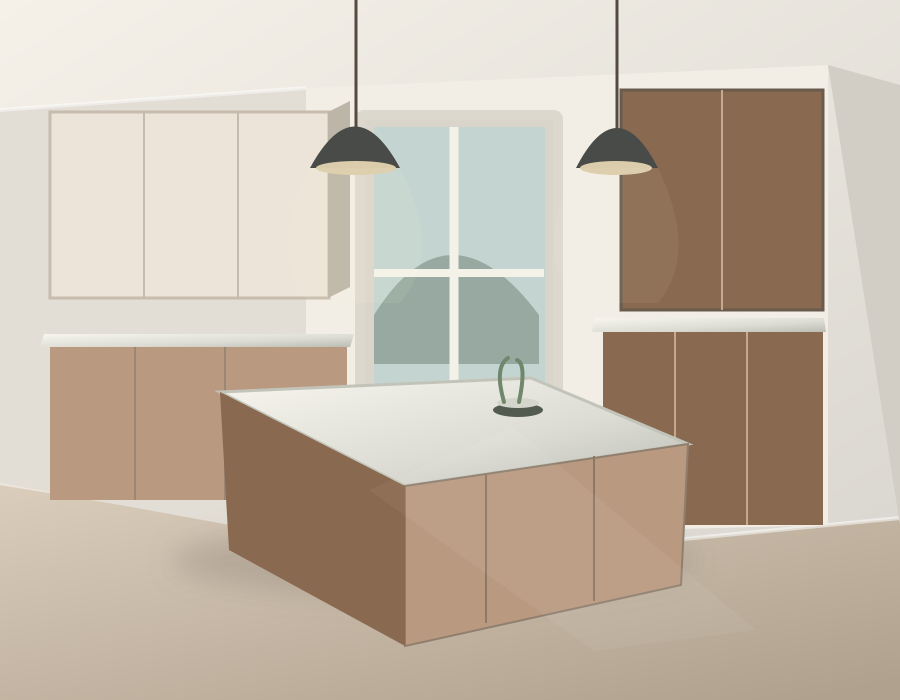
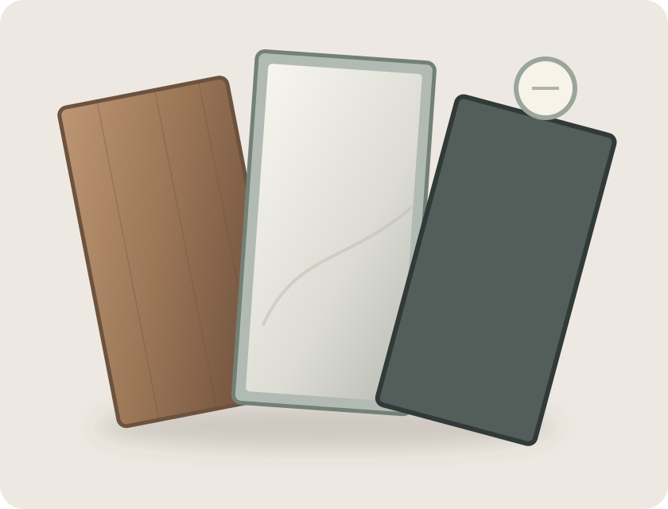
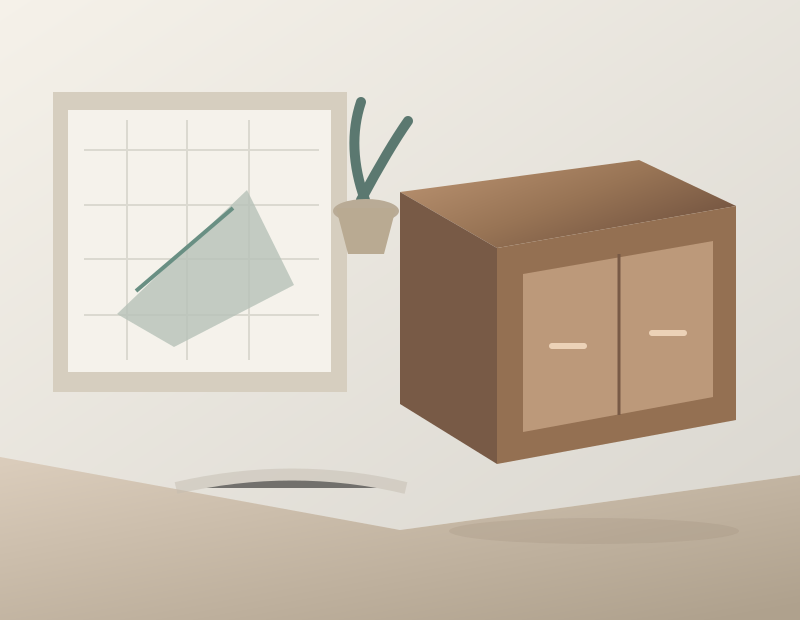
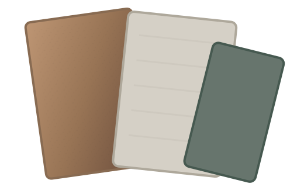
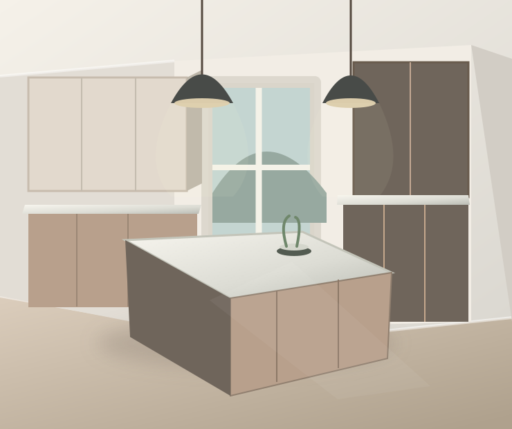

Мебель,
в которой
вы дома.
Кухни, шкафы и пространства для хранения, продуманные под ваши привычки, размеры и ритм жизни.

Не подгонять жизнь под мебель.
Создавать мебель под жизнь.
Каждый проект —
чья-то история.
Собрали подробности из публикаций «Твоей Кухни» за ноябрь 2026 года. Визуализации созданы отдельно и не являются фотографиями этих заказов.
Данные о размерах и материалах взяты из постов VK от 9, 10 и 12 ноября 2026 года. Иллюстрации — художественные концепты, не фотографии готовой мебели.
Мебель становится
частью пространства.
Не просто шкаф или кухня — а решение, в котором всё на своём месте.
Представьте.
А мы поможем собрать.
Выберите тип мебели, планировку и оттенок. Конструктор соберёт запрос для дизайнера; точные размеры и материалы согласовываются на замере.
Красота живёт
в фактурах.
Фасады, декоры и фурнитура создают характер мебели. Некоторые из них компания уже использовала в опубликованных проектах.

От мягкого дерева до выразительного камня
Экспериментируйте с цветом, текстурой и контрастом — в финальном проекте всё согласовывается по образцам.
В ноябрьском проекте упоминался пластик Gentas с декорами под камень и бетон.
В прихожей использовались древесные оттенки, включая «Ароза Реликтовая».
Для угловой кухни выбирали декор «Эвора серая».
Уточняйте доступные механизмы и системы хранения под конкретный проект.
Упоминание материалов в опубликованных проектах не гарантирует их наличия и доступности для новых заказов.
Большая мебель
начинается с разговора.
Понятный путь от первой идеи до мебели, которая встанет на своё место.
Обсуждаем задачу
Что хочется изменить, какая мебель нужна, какие есть размеры и пожелания.
Замеряем и проектируем
Дизайнер помогает согласовать конфигурацию и детали будущего изделия.
Подбираем материалы
Фасады, столешницы, наполнение и фурнитура под задачу и бюджет.
Изготавливаем и устанавливаем
Сроки производства, доставку и сборку согласовывают индивидуально.

Сделано под ваши размерыНе просто гарнитуры.
Продуманные решения.
В сообществе «Твоя Кухня» команда показывает реальные проекты, рассказывает о размерах, материалах и работе дизайнеров. В ноябрьских публикациях упомянуты Екатерина и Альбина; директором представлен Вячеслав.
Компания заявляет фабричное изготовление, бесплатный замер в Липецке и индивидуальный подход. Точные сроки, гарантия и условия доставки требуют подтверждения владельцем.
Посмотреть сообщество VKВаш проект.
Ваши вводные.
Стоимость мебели складывается из размеров, планировки, материалов, наполнения и монтажа. Поэтому вместо случайных «цен от» мы предлагаем подготовить запрос на индивидуальный расчёт.
Подобрать параметрыВ прежнем описании сообщества указывалась доставка с подъёмом за 2 200 ₽ и отдельная оплата сборки. Не используем эти суммы как действующий прайс до подтверждения.
Перед тем, как
начать.
Собрали ответы на распространённые вопросы о мебели на заказ. Финальные условия обсудите с компанией.

Как узнать стоимость кухни или шкафа?
Стоимость зависит от размеров, материалов, фурнитуры и комплектации. Соберите пожелания в конструкторе и отправьте запрос компании на расчёт.
Замер по Липецку бесплатный?
В описании VK компания заявляет бесплатный замер в Липецке. Уточните, сохраняется ли условие для вашего адреса и выбранной мебели.
Сколько времени занимает изготовление?
В сообществе упоминались сроки от двух недель. Реальное время зависит от сложности заказа, материалов и текущей загрузки производства.
Можно ли заказать мебель нестандартных размеров?
Да, индивидуальные размеры — основная специализация компании. Возможность конкретного решения определяется после обсуждения и замера.
Какие материалы можно выбрать?
В портфолио упоминаются фасады Gentas и различные декоры под древесину, камень и бетон. Доступные образцы и поставщиков нужно уточнять у дизайнера.
Есть ли гарантия и входит ли сборка?
Компания публиковала сведения о гарантиях и отдельной оплате сборки. Точные сроки, исключения и стоимость должны быть прописаны в согласованных условиях заказа.
Давайте создадим
что-то своё.
Расскажите о будущей кухне или шкафе. Перейдите в сообщество «Твоя Кухня», чтобы обсудить расчёт и замер с командой.
Телефон и адрес компании пока не подтверждены, поэтому в демоверсии указаны только проверенные ссылки VK.
